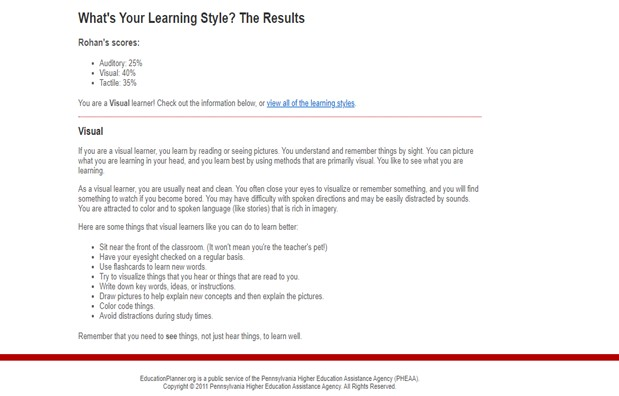
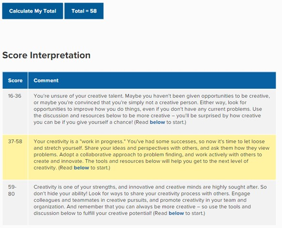

profile link: https://www.16personalities.com/profiles/4df92a7da4b09
The protagonist personality types are good at influencing, motivating and leading people, although sometimes they can put pressure and push someone too far. The protagonist traits strengths include tolerance, reliability, charisma, Altruistic and natural leaders. What these traits mean for me is that I should utilise them in situations where appropriate. The protagonist weakness includes overly idealistic, too selfless, too sensitive, fluctuating self-esteem and struggle to make tough decisions. The weakness to me indicates that I should build strategies to overcome them and or get others to hold me accountable. Although I believe that the “too- sensitive” (16 personalities 2011-2021), weakness was a past trait I have overcome and is not valid. In terms of personal characteristics scores, I believe that I should work on balancing out judging vs prospecting and thinking vs feeling to become more productive.
The results will influence my behaviour in a team positively and negatively. When it comes to leading a team, I could use my natural skill of motivating which would ensure that the team- members have something to push them. This would mean that I would be able to influence team members to get certain tasks done. However, my weakness in putting on the pressure or pushing someone too far, would harm the team and reduce the level of motivation. Therefore, I should have a detailed plan of motivating team members and being realistic. When it comes to Workplace habits “desire to assist a corporate” (16 personalities 2011-2021) and “open-mindedness” (16 personalities 2011-2021). Would have a positive impact on the team as other team members can comfortably collaborate and work towards one goal. Overall, I think my personality type of Protagonist would help guide the team’s behaviour to a positive attitude.
refernce link: What's Your Learning Style? 20 Questions (educationplanner.org)
These results for me indicate that when it comes to learning a concept, I should incorporate visual images or colour to be able to effectively recall the information. The tests also suggest sitting at the front of the classroom however I believe this is not relevant for me when it comes to effective learning.
I believe these results would impact my behaviour in the team in a positive way E.g., “difficulty concentrating with loud sounds” (Education planner.org 2020) will ensure that I suggest to the other team members to cut out the unnecessary sound and focus on the work. However, this may harm the group if a member takes it personally and builds up animosity in the group. “difficulty in spoken directions” (Education planner.org 2020) would be a challenge as I may need further clarification from team members and take up more time. My attraction towards “colour and rich stories” (Education planner.org 2020) would allow me to have vibrant and engaging communication with the other team members.
I should take certain aspects into accounts when forming a team, such as would my team members be able to overcome difficult challenges I might present, Through their learning style vantages. It would also help if the team members had an interest in storytelling and imagery as this would mean that I am not just talking to myself. And the other team members are engaged in the conversation.
reference link: https://www.mindtools.com/pages/article/creativity-quiz.htm
The results indicate that I should implement certain strategies to be more creative such as collaboration through sharing certain ideas. It suggests that I should use preparation: developing an interest in the subject, incubation: processing ideas, evaluation: determining requirements, elaboration: creating an effective plan. Source: "Creativity," Mihaly Csikszentmihaly 1996.
I believe my results would generally have a positive impact on the team. As although I am a “work in progress” (Mindtools 2021), I generally have a good idea of my creative abilities. For example, sharing my ideas and perspective with others would influence the team to critique think of the concept or evaluate it from a different viewpoint and ultimately push innovation. The potential negative effects of my behaviour in the team, since it’s a work in progress I may experiment with creative styles which could end up wasting the team members time and reduce productivity.
My level of creativity should be considered for certain aspects when forming a team. For example, I should seek team members who are generally flexible and patient as my idea’s I am not always perfect. Due to my work in progress creative style. I should also seek teams who have creativity as a solid strength as they can lead me and others by using their ability.
Return to homepage